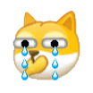

大三暑假实习java后端开发，公司用的前端框架是layui， 然后想着写个网页练习一下布局啥的突然想着可以趁着这个机会也把自己学过的硬件总结一下吧
然后这是纯前端，没有与后端交互，因为我想着写出来不仅自己留个纪念，还是发布出来给学弟学妹们(喜欢硬件的)借鉴一下我的学习之路吧，带后端发布的话我还得租个服务器， 我太穷了，没有钱,而且我是个菜鸟并写不出来什么厉害的网站，所幸这只是一个记录性质的网页，提前说一下我 真的很菜，我只是比你们在B站上多学了一点，对没错就是小破站，我所有的硬件学习都是在小破站上进行的，遇到不会的up主都有他们的群，可以加群问他们，有的可能需要入群费，也可以加我的QQ群一起交流，里面也有我收集的一些学习资料， 然后我网站中提到的99.9%的资料都在我的网盘中，需要的自己去下载
在写这个网站的时候是大四上学期本应该开学的时间，因为疫情的小爆发又开始网上教学了，一开学就要选毕设课题了，所以这里面我也准备了一些毕设项目用于自己保命(一直搞后端，硬件好多都忘了) 当然了看到这个网站的 18级的同僚们你们也可以参考一下，我不相信我点这么背和你们选择同一个课题
最后我想对学弟学妹们说嵌入式是一个很长的路我只是把我走的很短的几步告诉了你们，之后还有很长的路，还有很美丽的风景等着你们！之后的大佬们希望当你们临近毕业了能将这个网站完善然后把你们的知识传承下去 本网站的源码 点击链接进入，当然你们也可以自己重新开发。加油，郑工人！